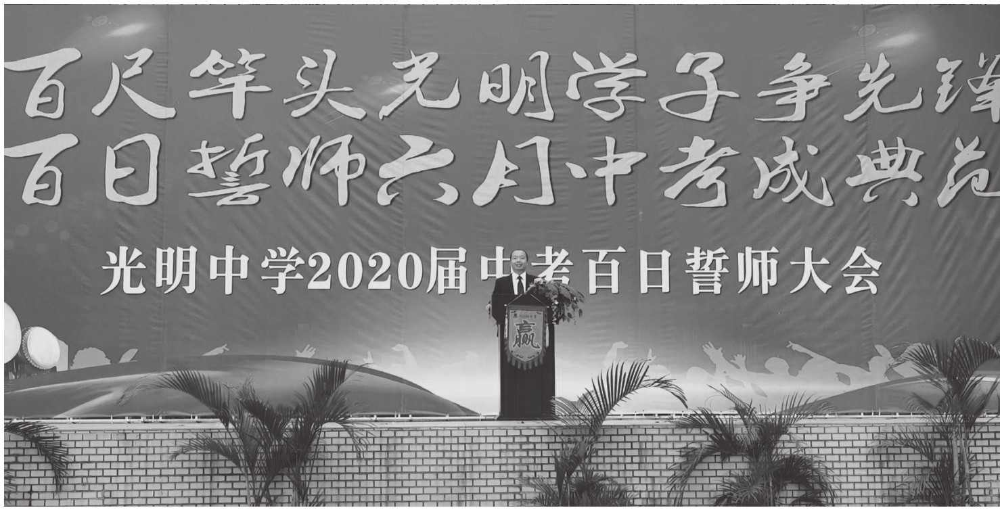

尊敬的各位老师、各位家长、亲爱的同学们：
大家好！
从来不敢问秋凉，唯恐相思与夜长。更阑人静月侵廊，独自行来行去，好思量。好久不见，甚是想念，我想大家了。今年的假期有点漫长，一场突如其来的疫情，让我们的见面不断延期。返校可以延期，但备考不能延期，成长更不能延期。在这个特殊的日子里，我们以一种特殊的网络直播方式，举行2020届初三“百日冲刺动员大会”，为光明学子加油助威。
有人说，中国人总被他们中最勇敢的人保护着。的确，在这个全民抗疫的大背景下，我们现在能安居一室，开展线上学习，是有一批批的最美逆行者，用生命守护生命，为我们的安全保驾护航。84岁高龄的钟南山院士、73岁的李兰娟院士，用科学的专业、战士的勇敢、国士的担当，逆行而上。还有一批批白衣天使、军人、爱心人士、志愿者等等，用生命诠释责任和担当。
那么，作为毕业班学子的我们，该有怎样的责任与担当呢？
我想，那就是为了自己的前程、为了家庭的期待、为了民族的未来去学习，去拼搏，去努力，去追求，去创造，去收获。
现在距离中考仅剩一百天，时光不负有心人，星光不负赶路人，你所有的付出都会是一种沉淀，都会让你成为更优秀的自己。
“云厚者，雨必猛；弓劲者，箭必远。”同学们，希望你时刻警醒，当疫情过后，老师担心同学们会出现明显的两极分化，自律的同学会越来越优秀，不断完成自我的超越；不自律的同学，在网课期间糊弄假学，成绩更会远远落后。所以，当你宅在家里的时候，也是考验个人自律性和自主性的成长时刻。因为结局不会陪你演戏，竞争激烈甚至残酷的中考和初升高录取只会青睐自律的你、勤奋的你、执着的你、不屈的你。

作者做2020届学生中考百日冲刺线上动员
我希望你们从今天起，从现在起，不再等待，不再迷茫，严格自律，管控好自己的复习备考。请你严格执行学校安排的作息时间，按时开展线上学习，认真聆听老师线上教学，自觉参与师生教学互动；请你始终把自己的目标放在心上，始终把责任和担当扛在肩上。请你记住：你努力的样子，你自律的样子，你自主的样子，就是你今年六月的样子，就是你未来的样子！
尊敬的家长朋友们，百天里，也请您做好疏导，做好陪伴，做好服务。中考，不是孩子一个人的战斗，有你们的支持，我们会更加自信，孩子会更加有力，未来也会更加精彩。
同学们，我们可敬的老师虽不能与你们在教室相伴，但他们早已披挂上阵，在网上教研，在选题组题，在直播答疑。在未来的百日里，我们全体老师会为你保驾护航，做你坚强的后盾。
孩子们，听说过这个故事吗？每天，当太阳冉冉升起的时候，大草原上的动物们就开始奔跑了。狮子妈妈教育自己的孩子说：“孩子，你必须跑得再快一点，再快一点，你要是跑不过最慢的羚羊，你就会活活地饿死。”在另外一个场地上，羚羊妈妈也在教育自己的孩子说：“孩子，你必须跑得再快一点，再快一点，如果你不能比跑得最快的狮子还要快，那你就肯定会被他们吃掉。”
这是草原的丛林法则。但，中考又何尝不是如此呢？在这场选拔性的考试录取中，唯有比别人跑得更快，才能从中脱颖而出，赢得最后的胜利。
道阻且长，行则将至；行而不辍，未来可期。光明学子，砥砺前行激扬鸿鹄志；六月中考，笑傲群雄绽放光明顶。千帆竞发，百尺竿头争先锋；百舸争流，百日冲刺成典范。
2020，否极泰来，我们的中考、我们的人生，一定能绽放新的精彩！